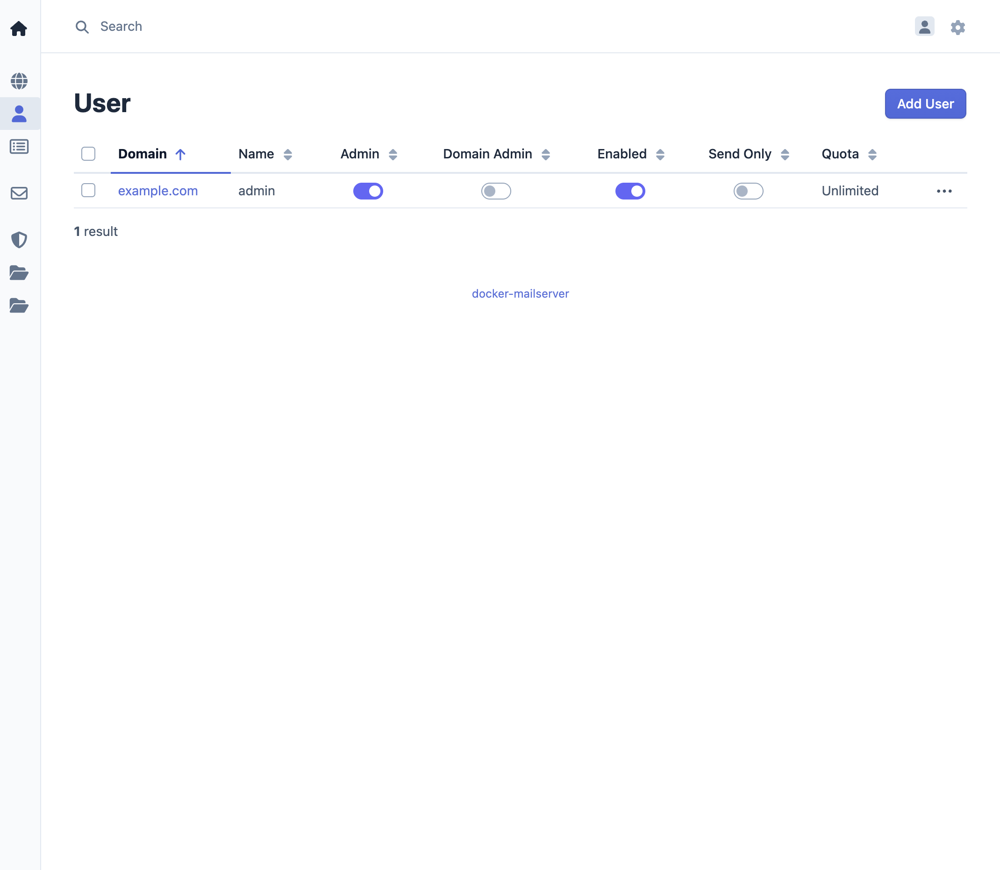
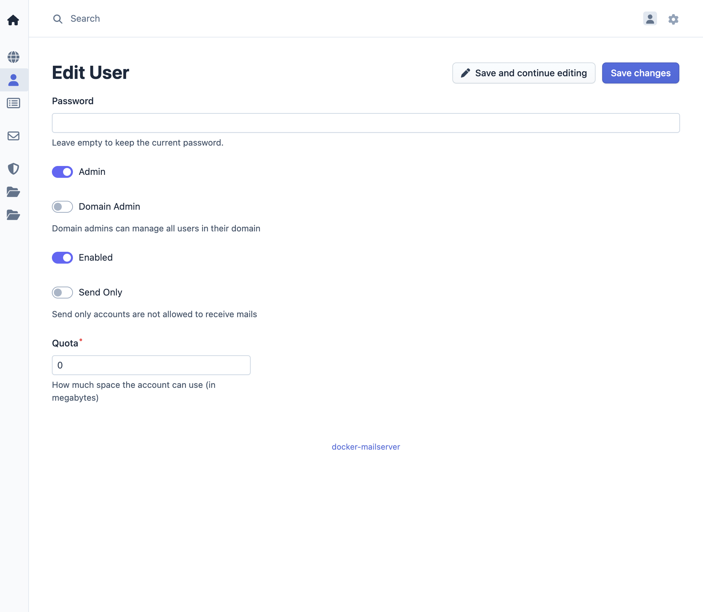

Manage Users
User management allows administrators to create and configure email accounts. Each user account represents an email address that can send and receive emails through the mailserver.
Overview
Users are email accounts associated with a specific domain. Each user has a unique email address, password, and optional quota limits. Users can access their email through IMAP, POP3, or the webmail interface.
Access Control
- Admin: Can manage users across all domains
- Domain Admin: Can manage users within their assigned domain only
- User: Cannot manage other users, only their own account settings
See User Roles for more information.
User Operations
User List
The user list shows all configured users in the system:

Adding a User
- Access the management interface
- Navigate to User in the menu bar
- Click Add User
- Enter the following information:
- Email Address: The full email address (e.g.,
user@example.com) - Password: Set an initial password for the account
- Quota (optional): Storage limit in megabytes
- Admin: Whether the user is an administrator
- Domain Admin: Whether the user is a domain administrator
- Enabled: Whether the user is enabled
- Send Only: Whether the user can only send emails
- Save the user
The email address must belong to a domain that exists in the system. The password should meet security requirements (complexity, length) as configured in the mailserver.
Editing a User
- Navigate to User in the menu bar
- Select the user to edit
- Modify user details:
- Password: Update the account password
- Quota: Adjust storage limits
- Admin: Whether the user is an administrator
- Domain Admin: Whether the user is a domain administrator
- Enabled: Whether the user is enabled
- Send Only: Whether the user can only send emails
- Save changes

Note: Changing the email address is typically not supported. To change an email address, create a new user and migrate data if needed.
Deleting a User
- Navigate to User in the menu bar
- Select the user to delete
- Confirm the deletion
Warning: Deleting a user permanently removes the email account and all associated email data. This action cannot be undone. Ensure important emails are backed up before deletion.
User Properties
Email Address
The email address uniquely identifies the user account. It consists of a local part (before the @) and a domain part (after the @). The email address format must be valid according to RFC 5322.
Password
User passwords are stored securely using hashing algorithms. Passwords can be set during user creation or updated later through the user management interface. Password policies are enforced by the mailserver configuration.
Quota
Email storage quotas limit the amount of disk space a user's mailbox can consume. Quotas are specified in megabytes. When a user reaches their quota limit:
- Incoming emails may be rejected
- The user cannot send new emails until space is freed
- Quota warnings are sent to the user
Send Only
When a user is set to send only, they can only send emails. They cannot receive emails via IMAP, POP3 or the webmail interface.
Admin
When a user is set to admin, they can manage other users and domains.
See User Roles for more information.
Domain Admin
When a user is set to domain admin, they can manage users and aliases within their assigned domain.
See User Roles for more information.
User Access
Once created, users can access their email accounts through:
- IMAP: For email client access (port 143 with TLS)
- POP3: For email client access (port 110 with TLS)
- SMTP: For email sending (port 587 with TLS)
- Webmail: Roundcube web interface accessible through the web service
Users authenticate using their full email address and password.